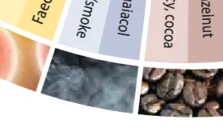

Chapter 5 · Matching food with wine
The Chemistry of Flavours and the Aroma Wheel
The constitutive or native flavouring substances are essentially described as those compounds that are formed in fruits, vegetables, spices and herbs by plant metabolism or that are formed during harvesting, storage, drying or (e.g., enzymatically) after comminution. They can occur both as pleasantly perceived aroma substances, but also as (atypical) aroma defects. Constitutively formed flavouring substances can be grouped according to their structures. Some of the substance groups are listed below.
(Adapted from Stefanie Spuller, Aroma und Gewürze, Graz 2013):
Group 1: Aliphatic hydrocarbons (sulphurous, waxy, green) Aliphatic hydrocarbons are usually understood to be shortchain fatty acids and their degradation products such as alcohols, aldehydes or esters. This group also includes sulphur compounds, which are responsible for the odour of onions, garlic, leeks and chives.
The low number of this group indicates that their odours volatilize easily. For this reason, these foods should be seasoning flavours to come into their own, and should be used fresh, eaten immediately and not heated. One of the most fragrant molecules in this group is hexanal. It is mainly found in green apples, tomatoes, grapes, olive oil, grapes and green tea.
(Vierich et al., 2012).
Group 2: Acyclic terpenes (citrusy, fruity, floral) All molecules that smell of flowers and citrus fruits are categorized in this group. This is because acyclic terpenes are responsible for the volatile, floral flavourings in herbs and spices. Citral, a collective term covering geranial and neral, is found not only in citrus fruits, but also in juniper, and determines its odour. Juniper is therefore ideal for flavouring lemon marmalades. It can also be used to add a fresh flavour when smoking meat. Ocimene, which smells of resin and citrus, is another fragrant molecule in this group. It is mainly found in basil, lavender and thyme flowers.
(Vierich et al., 2012) .
Group 3: Cyclic terpenes (balsamic, camphoraceous) A distinction is made here between monocyclic, bicyclic and higher cyclic terpenes.
Monocyclic terpenes are quite volatile and should only be boiled briefly. These include the citrus-like lemon. They are also found in caraway, fennel and eucalyptus. The bicyclic and higher-cyclic terpenes include 1,8-cineole or pinene. These terpenes are already “heavier” and therefore less volatile. Higher-cyclic terpenes are characterised by warm, balsamic, calming, camphor-like and slightly resinous tones. They are found in herbs and spices, which means that they can be optimally supplemented or replaced,
(Vierich et al., 2012).
Group 4: Sesquiterpenes (dark, heavy-floral) The structure of sesquiterpenes is very complex, making the fragrances in this group hardly volatile. The odours in this group are characterised by dark, warm tones. These include not only spices such as pepper, cinnamon and cloves, but also herbs such as oregano and rosemary. Farnesol, for example, is responsible for the strong and persistent scent of fragrance of lily of the valley and orange blossom water.The fragrances in this group are particularly effective in hot dishes.
(V ierich et al., 2012).
Group 5: Phenolic compounds (deep and aromatic) The spectrum of compounds belonging to this group is quite large, and therefore they can be classified into two sub-groups:
Group 5a: It ranges from vanillin in vanilla to benzaldehyde in bitter almonds. Alsoanisaldehyde and anethole, which are found in aniseed, are also included. The term “aromatic” refers to the structure of the benzene ring. The odours of this group are described as “heavy”, “smoky” and “nutty”. Many aromatics leave a bitter flavour. Just how diverse these aromatic compounds can be illustrated by the aromatic carboxylic: benzoic acid. In the alimentation-industry salt of Benzoic acid is used as a preservative. In cranberries, blueberries and plums, it naturally prevents the growth of fungi and bacteria. Its flavor also provides the pleasant fragrance of incense.
(Vierich et al., 2012).
Group 5b: Representatives of this group are characterised by the fact that they smell even more intense and "oilier" than the fragrances in group 5a. These include cinnamaldehyde and cinnamic acid, which are responsible for the flavor of cinnamon. The most diverse is eugenol: In nutmeg and cinnamon, it is responsible for the warm but rather heavy fragrance. It is also found in cloves, but also in herbs such as some types of basil and laurel and in bananas and cherries. The flavouring agent estragole is found not only in herbs such as tarragon, lemongrass and basil, but also in spices such as nutmeg, aniseed and fennel. This results in many different spice-herb combinations.
(Vierich et al., 2012).
Group 6: Heterocyclic compounds
(roasted flavours) This group is mainly characterised by fragrances from roasted aromas. Roasted flavours can either arise through heating processes in the kitchen or can be already contained in herbs or spices. The flavouring substance furfural is already present in cloves and smells of caramel or baked bread. Maltol, on the other hand, is only produced when sugar is heated or caramelized. Everyone knows that sugar normally has no particular odour and only tastes sweet. However, if the sugar is caramelized, a sweet, malty caramel note develops. The high number of this group indicates that the molecules in this group are hardly volatile
and can therefore still be smelled even after a few days. (Vierich et al. 2012).
Group 7: Non-volatile compounds (trigeminal stimulus) Representatives of this last group are responsible for a pungent stimulus or another trigeminal stimulus. They are non-volatile and are characterised by double bonds. These include capsaicin, which gives chilli peppers their burning heat. Pure basic flavour carriers are never found in this group.
(Vierich et al., 2012).
Wine off-flavours and other defects
Oxidized wine (Oxidized wines lose their brightness, in colour and flavour. Deep reds turn a brownish-orange colour and have a strange vinegar-and-caramelized-apple characteristic. White wines are much more susceptible to oxidization than reds because the higher tannin levels of red wines act as a buffer.)
Cork taint (2,4,6-Trichloroanisole TCA; wet newspaper, mouldy cardboard, or wet dog.)
Sulphur compounds (Putrid, spoiled vegetables, mercaptan related to dihydrogen sulphide; rotten egg, fart, burnt rubber, cooked garlic, or skunk smells) (Dimethyl sulphide; Methyl mercaptan)
Cooked wine (Heat Damage)
Light-strike (UV Light Damage) Substances in the category of off-flavours, which often give the impression of quality defects in foods, are often the same substances that in other concentrations belong to desired, positively evaluated flavour components.
Microbial and bacterial taint (Many microbes live during the wine fermentation in addition to yeast. If one of these colonies becomes too aggressively present pre- or post- alcoholic fermentation, various off-aromas may start to occur.)
Volatile Acidity (Acetic acid; smell of balsamic vinaigrette)
”Glass” shards (Tartrate Crystals; little crystals sitting on the bottom of older bottles. They cause you harm; decant the wine with a filter)
Smells “green” (Herbal Aromas; smell of grass, eucalyptus, or asparagus. The most common of these chemicals is methoxypyrazine, another is 3-cis-hexenol. These aromas can seem similar to sulphur or microbial wine faults, but they are not)
Smells “like a farm” (Brettanomyces is a type of wild yeast that is very odiferous! Bretty wines smell like a farmyard, hay bales, sweaty saddle, Band-Aid, or “horsey.” Even in very low amounts, Bretty often gives wine a metallic taste on the finish).
More off-flavours: Earthy, musty, muffy (geosmin); Greasy, rancid, frying
fat; (E,E)-2,4-nonadienal; Fishy; (trimethylamine); Hay-like, straw-like, dry herbs (3-methyl-2,4-nonadione); Cheesy,
sweaty (valeric acid); Adhesive, glue or varnish (ethyl acetate); Papery, cardboard-like (Z)-3-Nonenal); Mushroomlike, forest floor (1-octen-3-one); Rancid, fishy, “cold store” (Cis-4-heptenal); Rancid butter (butyric acid); Pigsty, faecal (skatol); Sweaty, cheesy (isovaleric acid).
This article is adapted from: R. J. Harrington FOOD AND WINE PAIRING A SENSORY EXPERIENCE “2008; Luis Gradissimo: Enogastronomia (2020); Glossario do vinho, parte characterization :A.S Curvelo Garcia et al analise sensorial 2017; Busch- Stockfisch, Praxis Handbuch Sensorik 2002; J. Robinson, How to Taste: A Guide to Enjoying Wine (New York: Simon and Schuster, 2000), 17–26; D. H. Cook, ‘‘The Tongue... A Sense of Taste’’ (2000), www.iit.edu /”smile / bi9105.html (accessed August 15, 2004); Stefanie Spuller, Aromen und Gewürze, (Graz 2013); Peter Klosse (2013)
s y t ine e ial ole ne m c i o s V Ros ifi H Vinegar Ja e Amoniacal g Art note (UTA) Lemonn wine aging, Me ra O di lime, beeswaxlike, Acacia blossom, cina Peach ry
h
S tiky, cartonl,
rs
y mu rr
a
Cher
Pungent, biting h
sty be
,
G , w lue a tra
weetish D
S naif va
S e
remover Banan
sin Citrus fruit Tangy P a
rnish ice candy
f per, ca e ct one t
oconut
a
C
S n rd rries
Raw potato
boardts Be Solvent ic wery ot x
Fun
o E
Freshly cut grass
ga
C Fl
l-like, for
hem
Hay-like,
e
ity
st flo or
Humus
straw-like,
ical Fru
erbs Earth, mouldy id h dr
en Gre
Speamint, mint Co
E M
rk
ar usty th y
nt Mint, peppermi Rotten
Fresh cooling Vegetal,
vegetables
The Aroma Wheel*
Foul, pudrid vegetable
Eucaliyptus-like Soul, sulphurous
Mushroom
Mushroo m-like, cham
Vege
pignon
table
ancid butter R
s, raw ctic La Ve geta
Fresh c y
(Micro) bl
eat
es,
ucumb
cook
esy, sw
S
er
ed
Che
Biological/ pi /animal
Boile
cy
d potat
Sm
urt
Roasty
h
Yog oe s
ok S weeti
Va
y
ni lla
sh
Buttery, butter Anee ia
Tangy
c B s
Tangy, hearty Animal
p-tryning fat,an n ed r it e
Tangy, he
te
De tty,
Sweetish
marr icke
Swe
al fa
,
ch m
hearty
f z o ipa nd
Nuty et
ty o n , t Cl
ish
Fa ove Ci
a
n Sweaty s a namo
rty
ci Car n Ra n a Thym w Fumes/smoke a Fishy r y Ga Gried onionCa Ea oa Guaiacol H e B rlic r ramel a ty, cocoazelnut


*(Source: Adapted from Wine Folly https://winefolly.com/tips/wine-aroma-wheel- 100-flavors/ and Olfactory and aroma training in sensory analysis DLG Expert Knowledge 01/201 https://www.dlg.org/en/food/topics/dlg-expert-reports/ sensory-technology/dlg-expert-report-1-2017)